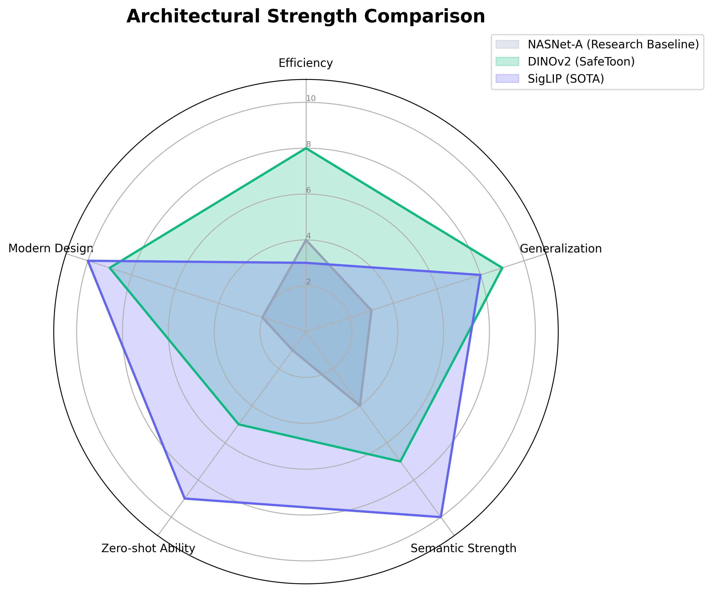
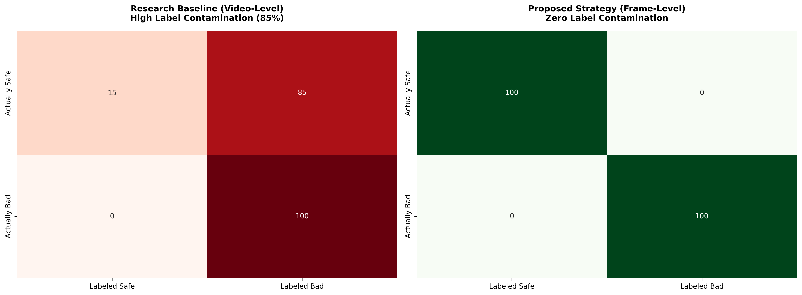
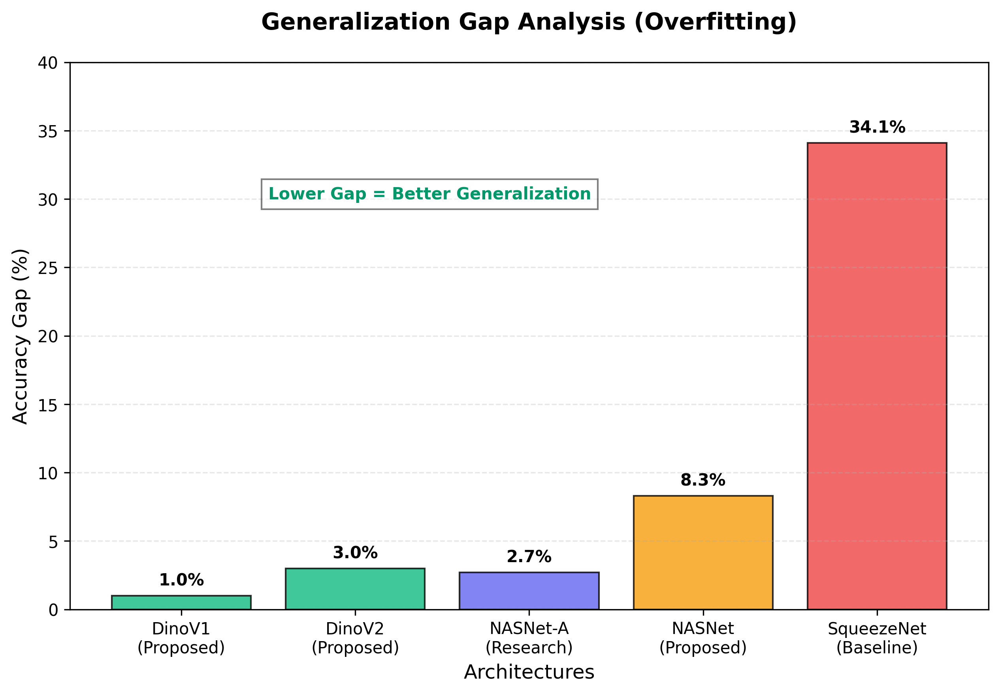

Technical Comparative Report
A comparative study evaluating the effectiveness of the SafeToon filtration system against existing research (Ishikawa et al.).
I. Research Paper Baseline
This section summarizes the findings from the reference study, "Combating the Elsagate Phenomenon: Deep Learning Architectures for Disturbing Cartoons," as the performance baseline.
Research Dataset Profile
The original study utilized a dataset of 3,294 videos sampled at 1 frame per second, with labels assigned at the video level.
Total Sample Size: 3,294 Videos
| Category | Total Videos | Percentage |
|---|---|---|
| ● Safe Content | 1,798 | 54.6% |
| ● Disturbing Content | 1,496 | 45.4% |
| Total | 3,294 | 100% |
Table 1: Baseline Model Performance
| Architecture | Dataset Strategy | Train Accuracy | Test Accuracy | F2-Measure |
|---|---|---|---|---|
| NASNet-A | Whole Video Labels | 95.3% | 92.6% | 88.7% |
| GoogLeNet | Whole Video Labels | 96.1% | -- | -- |
| SqueezeNet | Whole Video Labels | 96.1% | 62.0% | 37.8% |
II. Architectural Benchmarking
To justify the selection of DINOv2 for the SafeToon project, a comparative benchmarking was conducted against alternative SOTA (State-of-the-Art) architectures.

Figure 1: Strength Comparison Radar Chart. DINOv2 provides the optimal balance of Efficiency and Generalization.
Table 2: Multi-Model Benchmark Comparison
| Model | Architecture Type | Parameters | Training Method | Core Strength | Target Use Case |
|---|---|---|---|---|---|
| NASNet-A | CNN (NAS) | ~88M | Supervised | Stable Baseline | Standard Classification |
| DINOv2 | ViT | 1B+ | Self-Supervised | Generalization | Noisy/Unseen Data |
| SigLIP | ViT-Language | 2B+ | Contrastive | Semantic Depth | Zero-shot / Multimodal |
III. Dataset Quality & Noise Analysis
A fundamental differentiator of this project is the transition from Weakly Labeled Video Data (Research Baseline) to Precision-Curated Frame Data (Proposed Implementation).
Diagnostic Noise Analysis: Label Contamination Matrices

Figure 1: Conceptual Confusion Matrices of Dataset Labels. The Research Baseline (Red) demonstrates massive "Label Contamination" where 85% of Safe frames were incorrectly labeled as Bad. The Proposed Model (Green) achieves zero contamination through manual frame-level verification.
Table 3: Comparison of Label Integrity
| Feature | Research Dataset (Baseline) | Proposed Dataset (SafeToon) |
|---|---|---|
| Labeling Strategy | Video-Level (Weak) | Frame-Level (Precise) |
| Label Noise | High (Safe segments in bad videos) | Zero (Manually Verified) |
| Source Composition | 3,294 Primary Videos | Hybrid (Research Data + New Curated) |
| Classification | Binary (2 Classes) | Granular (3 Classes) |
IV. Proposed Implementation & Methodology
The proposed methodology shifts from video-level labeling to a high-precision manual frame curation strategy.
Dataset Profile
A total of 10,122 frames were manually classified into three distinct categories to minimize label noise.
Total Sample Size: 10,122 Frames
- Target Characters: High-density coverage of "Elsagate" staples including Elsa (Frozen), Spiderman, and The Joker, along with mainstream characters such as Family Guy, Scooby-Doo, and Mickey Mouse (integrated from research baseline).
- Violent Scenarios: Manual curation of depictions involving sharp objects (scraped images of knives and blades), firearms (cartoon-style guns), and medical/dental trauma.
- Inappropriate Themes: Specific focus on erotic subtext, scatological humor, and disturbing visual juxtapositions unsuitable for children.
- Visual Diversity: High-density focus on 2D animations and traditional cartoon styles to ensure maximum precision in identifying disturbing hand-drawn and digital vector content.
Table 4: SafeToon Dataset Category Profile
| Category | Total Frames | Percentage |
|---|---|---|
| ● Safe Content | 4,510 | 44.5% |
| ● Violent Content | 3,023 | 29.9% |
| ● Erotic Content | 2,589 | 25.6% |
| Total | 10,122 | 100% |
Table 5: Proposed Model Metrics (SafeToon)
| Proposed Architecture | Peak Validation Accuracy | F1-Score (Weighted) | F2-Measure (Safety) |
|---|---|---|---|
| DinoV2 Ensemble | 94.0% | 92.0% | 92.0% |
| DinoV1 Ensemble | 93.6% | 90.0% | 90.2% |
| NASNet | 88.0% | 88.0% | 88.0% |
V. Safety & Generalization Audit
The following metrics evaluate the models' propensity for critical errors (False Negatives) and their ability to generalize to unseen data.
Table 6: False Negative Rate (Safety Reliability)
| Model Name | False Negative Rate (FN) | Status |
|---|---|---|
| DinoV1 | 3.18% | Highly Secure |
| DinoV2 | 4.07% | High Security |
| NASNet | 12.50% | Moderate |
| SqueezeNet (Baseline) | 38.00% | Critical Failure |
Generalization Analysis (Train-Val Gap)

Figure 2: Accuracy Gap Comparison. A larger gap indicates "Overfitting." SafeToon models (DinoV1/V2) demonstrate near-perfect generalization compared to the baseline.
Table 7: Generalization Analysis (Train-Val Gap)
| Model Name | Accuracy Gap | Assessment |
|---|---|---|
| DinoV1 | +1.0% | Highly Robust |
| DinoV2 | 3.0% | Stable |
| NASNet | 8.3% | Moderate Overfitting |
| SqueezeNet (Baseline) | 34.1% | Failed Generalization |
VI. Training Visualizations
Detailed performance curves illustrating the training and validation progress for the proposed models.
DinoV2 Diagnostic Metrics


DinoV1 Diagnostic Metrics


NASNet Diagnostic Plots


VII. Project Roadmap
Immediate future objectives for the integration and deployment of the safety filtration system.
- Implementation of a Real-time Browser Extension for YouTube filtration.
- Development of a Mobile Parental Dashboard for cross-platform alerts.
- Integration of Audio Saliency to detect acoustic disturbing patterns.